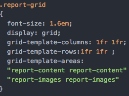

Strengths and Weaknesses of Current Web Specifications and Standards Over Previous Versions
Introduction
This report will be based on the key differences between the two HTML versions, HTML 4 and HTML 5. The strengths and weaknesses of HTML 5 over HTML 4 will be reviewed with some example code to visually show the differences.
HTML 4
HTML 4 was released in 1997, since then there has been substantial improvements with the introduction of HTML 5. One key difference was allowing web authors to control presentational elements with CSS using syntax such as center, font and strike (Duckett, 2011. 179).
The current iteration is HTML 5 which was officially announced as complete back in 2015 by the World Wide Web Consortium (W3C) and since then, the adoption rate for modern web pages has increased with companies like Facebook, YouTube, Amazon and Google now using the new standard to enhance their web presence (Singh, 2015). HTML 5 brings us new elements to help integrate multimedia such as video, sound and canvas just to name a few. HTML 5 also delivers semantic elements to help developers and the browsers to understand what is going on and how the code is structured. Semantic elements are almost plain English what is going on within the HTML code. Some examples of semantic elements are header, footer, nav, article and figure (Christian, 2017).
This shows one of the many advantages HTML 5 has over HTML 4 because previously developers would constantly re-use div tags and assign specific class and ID’s to differentiate them from others. With all the div tags present it would have gotten complicated and hard to understand what is what at a first glance, but now that is all changed with the semantic elements.
Image 1 is a website where one of its pages has consistent uses of the div tag and a particular class or ID assigned to it to tell it apart from the others. You can also see that the page uses the center tag a few times, this shows that the website is not utilising the most up-to-date and newly recognised HTML standards to help enhance the websites usability and interoperability. If you compare this website to the website in Image 2, you will see that it still uses the div tag but it also contains some of the new HTML 5 semantic elements like nav, header, footer and section.
HTML 5 brings a more up-to-date technology that is fairly similar to the cookies technology known as local storage. The difference between local storage and cookies is that cookies are small chunks of data sent over by a server to be stored locally to the user’s device whereas local storage is executed inside the browser using JavaScript and not sent to any server making local storage safer as it never leaves the user’s device (Jenkov, 2016). Properties set by the webpage in a user’s local storage can only be read by other pages that share the initial web domain name, so for example if Facebook locally stored properties onto a user’s computer, only subsequent Facebook pages can access them properties and no other website like Twitter, Amazon and BBC News.
There are some practices that if they were done in HTML now, they would be ridiculed because they are now known as bad practices. One example of which is to write styling and JavaScript code within the HTML file of a webpage inside the corresponding tags, style and script. These have the terms in-line styling and in-line scripting and the reason it is known to be bad practice now because for one it can make the HTML file laboriously hard to read and possibly understand with all the code compiled into one file. The second reason is that you lose any flexibility when it comes to changing styles and scripts if they are set within the HTML file. This is because the code within the source file has a higher priority than code that is in a CSS file for example. If an image was declared in HTML and was set a height and width for the image still in the HTML file, any CSS that targets that images height and width will have no effect forcing yourself to change it in the source file or delete it overall and declare the size in the CSS file.
W3C Markup Validation
The screenshots 3-14 will illustrate the validity of my HTML markup for my website. This test examines how well coded my HTML documents are and shows any warnings, errors and suggestions how to fix any of these issues.
Website Interoperability
In order to make my website fit the requirements of being a responsive site, I used a combination of using the viewport width feature in partnership with media queries and CSS grids. The combination of these features means that when a user changes the size of the browser window, or visit the size on a mobile phone, the content will adapt to the screen size and some of which will disappear and other content will appear in their place to suit the smaller screen devices. You can find some of the code I used below.
CSS grids is a new technique to create responsive websites and I decided to use it for some of my pages that I though that could benefit like the page this report will be on and the band member page
Reference List
Duckett, J. (2011) HTML & CSS Design and Build Websites. Indianapolis, Indiana, USA: John Wiley & Sons
Singh, S. (2015) HTML 5 On the Rise: No Longer Ahead of Its Time. Bay Area: Tech Crunch. Available from https://techcrunch.com/2015/10/28/html5-on-the-rise-no-longer-ahead-of-its-time/ [Accessed 23 November 2017].
Christian, W. (2017) HTML 5 Semantic Elements. [Lecture]. Web Authoring CMP1130M-1718, University of Lincoln, 10 October 2017. Available from https://wayne-christian.github.io/WEB-AUTH-PRESENTATIONS/week3.html#/30 [Accessed 23 November 2017].
Jenkov, J. (2016) HTML 5 Local Storage. Jakob Jenkov. Available from http://tutorials.jenkov.com/html5/local-storage.html [Accessed 23 November 2017].
Figure 1
Figure 2
Figure 3
Figure 4
Figure 5
Figure 6

Figure 7

Figure 8

Figure 9

Figure 10

Figure 11

Figure 12

Figure 13